Türkiye
Türkiye
The Türkiye route: 14 regions, 56 landmarks. Every landmark is built in three stages.
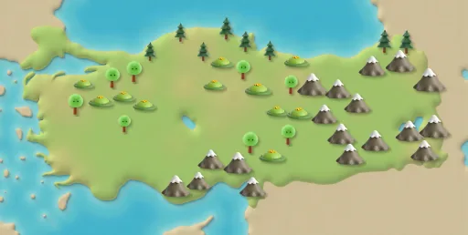
Istanbul · Historic Peninsula
Route steps 1–12
Hagia Sophia
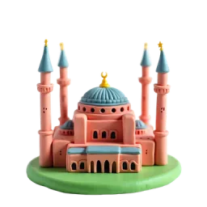
Stage 1 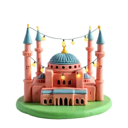
Stage 2 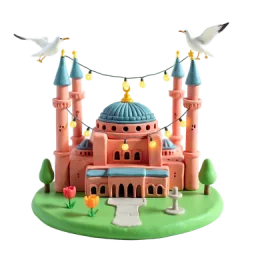
Stage 3 Completed in 537, Hagia Sophia remained the world's largest church for more than 500 years. Source: Wikipedia
Blue Mosque
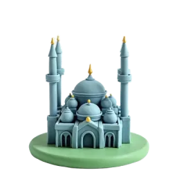
Stage 1 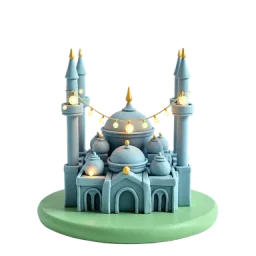
Stage 2 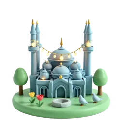
Stage 3 The Blue Mosque has six minarets. Inside, thousands of mostly blue Iznik tiles decorate its walls. Source: Wikipedia
Grand Bazaar
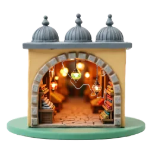
Stage 1 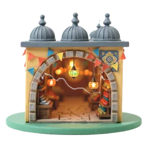
Stage 2 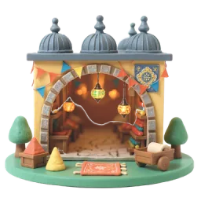
Stage 3 The Grand Bazaar has 61 covered streets and more than 4,000 shops. Source: Wikipedia
Basilica Cistern
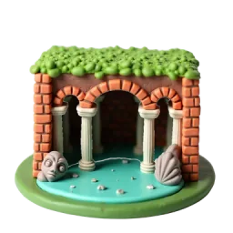
Stage 1 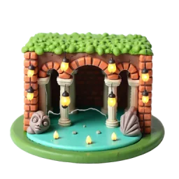
Stage 2 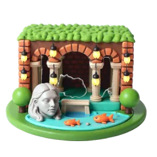
Stage 3 The ceiling of the Basilica Cistern rests on 336 marble columns, each 9 metres tall. Source: Wikipedia
Istanbul · Bosphorus
Route steps 13–24
Galata Tower
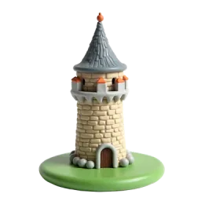
Stage 1 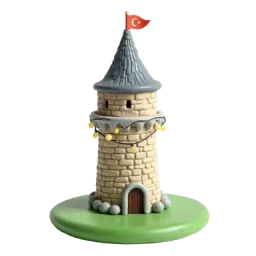
Stage 2 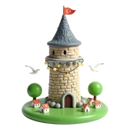
Stage 3 Galata Tower was built in 1348. At 66.9 metres, it was then the tallest building in the city. Source: Wikipedia
Maiden's Tower
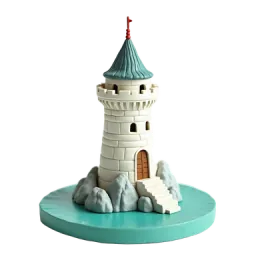
Stage 1 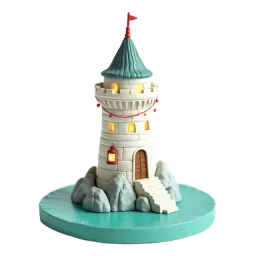
Stage 2 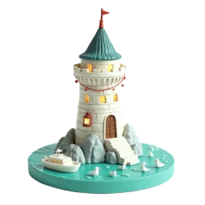
Stage 3 Maiden's Tower sits on a tiny islet 200 metres off Üsküdar. It appeared on the Turkish 10 lira banknote from 1966 to 1981. Source: Wikipedia
Bosphorus Bridge
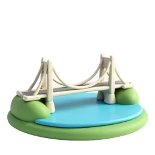
Stage 1 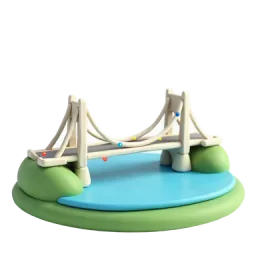
Stage 2 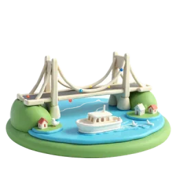
Stage 3 Opened in 1973, the Bosphorus Bridge links Europe and Asia. It is 1,560 metres long. Source: Wikipedia
Ortaköy Mosque
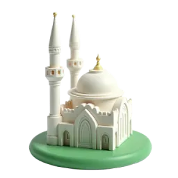
Stage 1 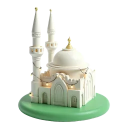
Stage 2 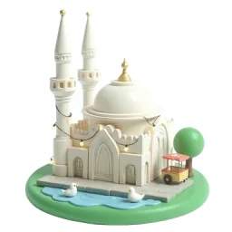
Stage 3 Ortaköy Mosque was completed around 1854–1856. Its architects, the Balyan father and son, also designed Dolmabahçe Palace. Source: Wikipedia
Edirne
Route steps 25–36
Selimiye Mosque
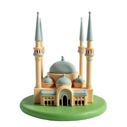
Stage 1 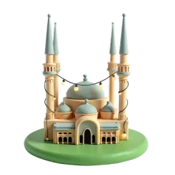
Stage 2 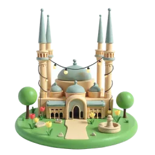
Stage 3 Mimar Sinan built Selimiye Mosque in 1568–1575 and called it his masterpiece. It became a UNESCO World Heritage Site in 2011. Source: Wikipedia
Üç Şerefeli Mosque
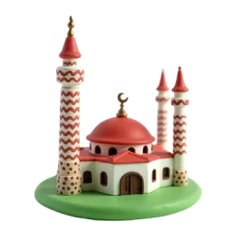
Stage 1 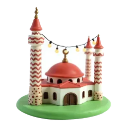
Stage 2 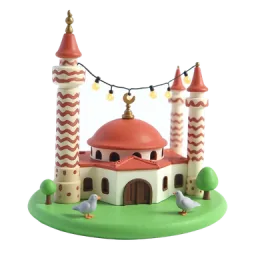
Stage 3 Üç Şerefeli Mosque was built in 1438–1447. Its name comes from its minaret with three balconies. Source: Wikipedia
Meriç Bridge
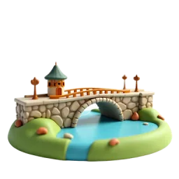
Stage 1 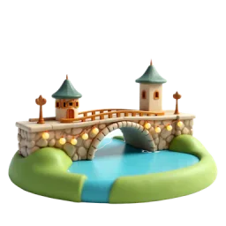
Stage 2 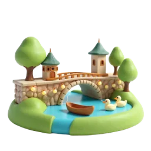
Stage 3 Meriç Bridge was completed in 1843. The 263-metre bridge has twelve arches. Source: Wikipedia
Kırkpınar Wrestling Arena
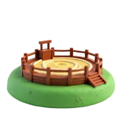
Stage 1 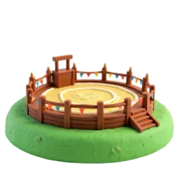
Stage 2 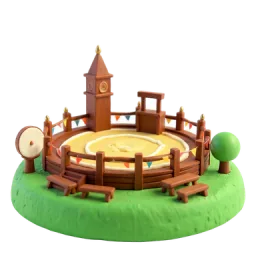
Stage 3 Kırkpınar oil wrestling holds the Guinness World Record for the longest-running athletic competition. Source: Wikipedia
Çanakkale
Route steps 37–48
Trojan Horse
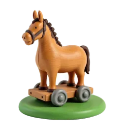
Stage 1 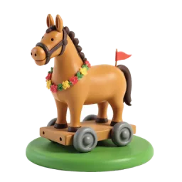
Stage 2 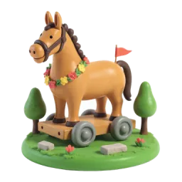
Stage 3 At the entrance to the ancient city of Troy near Çanakkale stands a giant wooden horse monument you can climb up a ladder and explore inside. It remembers the famous legend of the Trojan Horse, the clever trick Greek soldiers used to sneak into the city. Source: Wikipedia
Walls of Troy
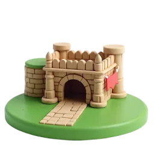
Stage 1 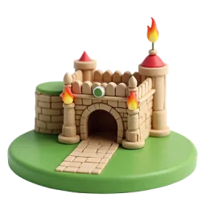
Stage 2 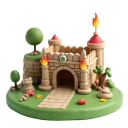
Stage 3 Archaeologists found nine city layers built on top of each other at Troy. It joined the UNESCO World Heritage list in 1998. Source: Wikipedia
Çanakkale Clock Tower
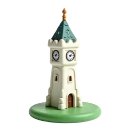
Stage 1 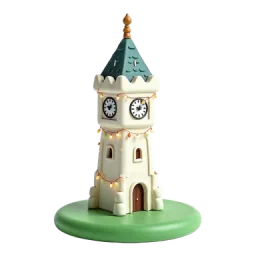
Stage 2 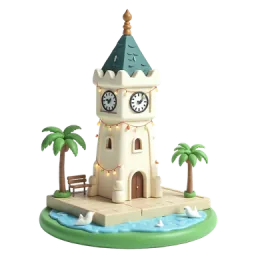
Stage 3 Çanakkale Clock Tower was built in 1896. The five-storey tower is about 20 metres tall. Source: Wikipedia
Kilitbahir Castle
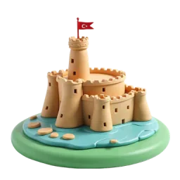
Stage 1 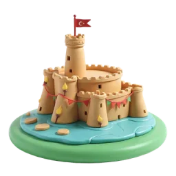
Stage 2 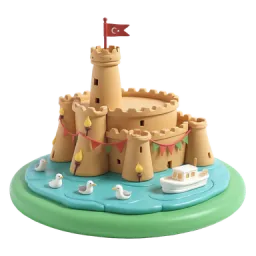
Stage 3 Kilitbahir Castle was built by Sultan Mehmed II in 1463. Its name means ‘lock of the sea’. Source: Wikipedia
İzmir · Ephesus
Route steps 49–60
Library of Celsus
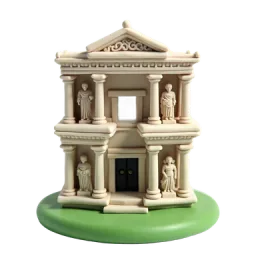
Stage 1 Stage 2 Stage 3 The Library of Celsus is believed to have held about 12,000 scrolls. It was the third-largest library of the ancient Greco-Roman world. Source: Wikipedia
Temple of Artemis Wonder

Stage 1 
Stage 2 
Stage 3 The Temple of Artemis at Ephesus is one of the Seven Wonders of the Ancient World. Today only its foundations and pieces remain. Source: Wikipedia
Konak Clock Tower
Stage 1 Stage 2 Stage 3 Konak Clock Tower opened in 1901. The 25-metre tower has four fountains around its base and is İzmir's symbol. Source: Wikipedia
Historic Elevator
Stage 1 Stage 2 Stage 3 İzmir's historic Asansör was built in 1907. It carried people up the steep cliff in Karataş, from the shore to the hilltop. Source: Wikipedia
Pamukkale
Route steps 61–72
Travertine Terraces
Stage 1 Stage 2 Stage 3 Pamukkale means ‘cotton castle’. Its snow-white travertine terraces are made by minerals from hot springs. Source: Wikipedia
Hierapolis Theatre
Stage 1 Stage 2 Stage 3 The ancient theatre of Hierapolis could seat about 15,000 people. Hierapolis became a UNESCO World Heritage Site in 1988. Source: Wikipedia
Cleopatra's Pool
Stage 1 Stage 2 Stage 3 In Cleopatra's Pool you can swim above ancient marble columns lying under the water. Source: Wikipedia
Tetrapylon of Aphrodisias
Stage 1 Stage 2 Stage 3 The Tetrapylon of Aphrodisias was built around AD 200. In 1991 it was raised again using about 85% of its original stones. Source: Wikipedia
Bodrum · Fethiye
Route steps 73–84
Mausoleum at Halicarnassus Wonder

Stage 1 
Stage 2 
Stage 3 The Mausoleum at Halicarnassus was one of the Seven Wonders of the Ancient World. The word ‘mausoleum’ comes from its owner, Mausolus. Source: Wikipedia
Bodrum Castle
Stage 1 Stage 2 Stage 3 Bodrum Castle was built from 1402 onwards. Today it is home to the Museum of Underwater Archaeology. Source: Wikipedia
Bodrum Windmills
Stage 1 Stage 2 Stage 3 The old windmills around Bodrum are counted among the special examples of Türkiye's traditional local architecture. Source: Wikipedia
Ölüdeniz Lagoon
Stage 1 Stage 2 Stage 3 Ölüdeniz gets its name from its calm water, even during storms. The lagoon is a nature reserve where building is not allowed. Source: Wikipedia
Antalya
Route steps 85–96
Yivli Minaret and Kaleiçi
Stage 1 Stage 2 Stage 3 The Yivli Minaret is a fluted brick minaret with traces of blue tiles. It has become a well-known symbol of Antalya. Source: Wikipedia
Hadrian's Gate
Stage 1 Stage 2 Stage 3 Hadrian's Gate was built for Roman Emperor Hadrian, who visited Antalya in AD 130. Locals call it ‘Üçkapılar’, the Three Gates. Source: Wikipedia
Aspendos Theatre
Stage 1 Stage 2 Stage 3 Aspendos has the best-preserved theatre of the ancient world. Opera and ballet festivals are still held there today. Source: Wikipedia
Düden Waterfalls
Stage 1 Stage 2 Stage 3 At the Lower Düden Waterfall, the Düden River drops 40 metres straight into the Mediterranean Sea. Source: Wikipedia
Konya
Route steps 97–108
Mevlana Mausoleum
Stage 1 Stage 2 Stage 3 The dome of the Mevlana Mausoleum is covered with turquoise tiles. It has been a museum since 1927. Source: Wikipedia
Alaeddin Mosque
Stage 1 Stage 2 Stage 3 Alaeddin Mosque is the largest Seljuk mosque still standing in Konya. It is named after Sultan Alaaddin Keykubad I. Source: Wikipedia
Sille Village
Stage 1 Stage 2 Stage 3 Sille has many small churches carved into soft volcanic rock. Its Aya Elena Church is believed to date back to AD 327. Source: Wikipedia
Çatalhöyük
Stage 1 Stage 2 Stage 3 Çatalhöyük was settled around 7500 BC. Houses were built side by side, so rooftops worked like streets. It joined UNESCO's list in 2012. Source: Wikipedia
Cappadocia
Route steps 109–120
Fairy Chimneys
Stage 1 Stage 2 Stage 3 Fairy chimneys formed over millions of years as wind and water wore away soft volcanic rock left by ancient volcanoes. Source: Wikipedia
Göreme Open-Air Museum
Stage 1 Stage 2 Stage 3 Göreme has the most painted rock-cut churches in Cappadocia. Göreme National Park joined the UNESCO World Heritage List in 1985. Source: Wikipedia
Uçhisar Castle
Stage 1 Stage 2 Stage 3 Uçhisar means ‘outer citadel’ and refers to its huge rock cone. In nearby Pigeon Valley, pigeon houses were carved into the rocks. Source: Wikipedia
Balloon Launch Field
Stage 1 Stage 2 Stage 3 In Cappadocia, hot-air balloons take off at sunrise, floating over fairy chimneys and valleys, especially around Göreme. Source: Wikipedia
Ankara
Route steps 121–132
Anıtkabir
Stage 1 Stage 2 Stage 3 Anıtkabir is the monument where Atatürk rests. Its construction began in 1944 and was completed in 1953. Source: Wikipedia
Ankara Castle
Stage 1 Stage 2 Stage 3 The first fort on the site of Ankara Castle was built by the Phrygians in the 8th century BC. Romans, Byzantines, Seljuks and Ottomans later repaired it. Source: Wikipedia
Atakule Tower
Stage 1 Stage 2 Stage 3 Atakule is 125 metres tall and opened in 1989. The restaurant at the top turns a full circle in one hour. Source: Wikipedia
Kocatepe Mosque
Stage 1 Stage 2 Stage 3 Kocatepe Mosque is the largest mosque in Ankara. It was built from 1967 to 1987 and can be seen from much of the city. Source: Wikipedia
Black Sea
Route steps 133–144
Safranbolu Houses
Stage 1 Stage 2 Stage 3 Safranbolu joined the UNESCO World Heritage list in 1994 thanks to its well-preserved Ottoman houses. Source: Wikipedia
Sumela Monastery
Stage 1 Stage 2 Stage 3 Sumela Monastery is built into a steep cliff about 1,200 metres high. Its founding is dated to around AD 386. Source: Wikipedia
Lake Uzungöl
Stage 1 Stage 2 Stage 3 Uzungöl means ‘Long Lake’. It formed when a landslide blocked a stream and made a natural dam. Source: Wikipedia
Rize Tea Gardens
Stage 1 Stage 2 Stage 3 Tea farming in Rize began as an experiment in 1912. Its rainy climate is just right for growing tea. Source: Wikipedia
Southeast Anatolia
Route steps 145–156
Statues of Mount Nemrut
Stage 1 Stage 2 Stage 3 In 62 BC, King Antiochus I built a tomb on the mountain top, guarded by giant statues 8 to 9 metres tall. Source: Wikipedia
Göbekli Tepe
Stage 1 Stage 2 Stage 3 Its giant T-shaped stone pillars, from around 9500 BC, are among the oldest known megaliths. UNESCO listed it in 2018. Source: Wikipedia
Stone Houses of Mardin
Stage 1 Stage 2 Stage 3 Mardin's old houses are built from local beige limestone. They step down the hillside, so the old town looks like a giant staircase. Source: Wikipedia
Halfeti
Stage 1 Stage 2 Stage 3 When the Birecik Dam on the Euphrates filled in the 1990s, part of Halfeti ended up under the water. Source: Wikipedia
Eastern Anatolia
Route steps 157–168
Akdamar Church
Stage 1 Stage 2 Stage 3 This church on an island in Lake Van was built from pink volcanic stone between 915 and 921. Source: Wikipedia
Ruins of Ani
Stage 1 Stage 2 Stage 3 Ani was once nicknamed the ‘City of 1,001 Churches’, though the real number was smaller. It joined the UNESCO list in 2016. Source: Wikipedia
İshak Pasha Palace
Stage 1 Stage 2 Stage 3 Work on the palace began in 1685 and went on for about 100 years, finishing around 1784. Source: Wikipedia
Mount Ararat
Stage 1 Stage 2 Stage 3 At 5,137 metres, Mount Ararat is the highest peak in Türkiye. It is a snow-capped volcano that is fast asleep. Source: Wikipedia